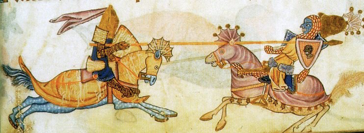

Being a collection of customized rules for play in the Greater Dolmenwood campaign
Ability score rolls are made in order, 3d6 for each ability.
Players may use the sub-par characters optional rule when rolling ability scores (DPB, p. 18).
Players may swap any two scores after rolling is complete.
PCs start with maximum hit points at first level (CON bonus still applies; see DPB, p. 19 or the Roll Hit Points section of the Online Rules Reference).
The following character/class options are in effect. Links are provided to the the Online Rules Reference where applicable.
Great strength: The fighter's strength score increases by 2 to a maximum of 18.This Combat Talent can stack.
In addition to gaining XP via treasure and defeating foes, PCs may gain XP from exploration. At the end of each session in which the PCs return to base, count up the number of Exploration Deeds and assign XP for each deed according to the participating PC with the lowest level. Use the Example Exploration Deeds list below as a guide. See DCB p. 107
| Level | XP |
|---|---|
| 1-2 | 200 |
| 3 | 500 |
| 4 | 1000 |
| 5 | 1500 |
| 6 | 3000 |
| 7 | 6000 |
| 8+ | 12000 |
PCs are subject to the Training Optional Rule: PCs must spend a period of time training in order to increase level. Until the training is complete, the character cannot advance to the next Level and can gain no further XP. (DPB p. 25). Individual characters must pay their own lifestyle expenses to sustain themselves for the training duration.
Quests in Fairy Optional Rule Characters that can gain Fairy runes must journey to a noble's court in Fairy to receive new runes (DPB p.93)
All PCs born in the mortal world fall under moon signs. Use the Moon Signs optional rules for such characters (DPB pp. 174-175).
All PCs born in the mortal world (mortals and demi-fey, excluding elves and grimalkins) and nominally belonging to the Pluritine Church may establish both a birth date and a saint's day.
Once the player has established the moon sign, they may choose a random day in the month to have been born. Use an online dice tool to roll a d28, d29, d30, or d31 depending on the month. The result is the character's birthdate.
Next, to establish the Saint's Day for the character, look at the Saint's Day immediately preceding the character's birth date. That Saint is now the character's patron saint.
On the PC's Saint's Day, if they venerate the saint in a local church, the PC can gain the blessing associated with that saint as if they had prayed at the shrine of that saint. The PC can receive the saint's blessing any time they do so (not just the once that might otherwise be the limit for non-spell-casters, per DCB p. 22).
The group comprises the following player roles (DPB p. 142):
The group should appoint a player for each role at the beginning of each session. No player should have multiple roles.
PCs use the Basic Encumbrance optional rule (DPB p. 148).
To encourage players to have their characters exit dungeons and return to base at the end of a session, the following optional rules are in effect:
PCs use the optional rule for Established Safe Paths (DPB p. 162).
PCs use the Dungeon Escape Roll option from Exiting the Dungeon (DPB p. 163). At the end of a session, if the PCs have not escaped the dungeon, follow the Dungeon Escape Roll procedure.
All of the optional combat rules under Other Combat Matters are available for use by PCs. This is subject to change in case the rules don't work as intended. (DPB pp. 168-169).
PCs only need to track ammunition if it is special ammunition. Mundane ammunition needn't be tracked.
PCs are subject to the Death's Door optional rule (DPB p. 168).
PCs are professional adventurers and can reasonably estimate the value of a piece of treasure. This does not allow them to determine magical qualities (See DCB? p. 161).
PCs may use the inebriation optional rules (DPB p. 127).
PCs may use the smoking optional rule (DPB p. 129).
PCs will use the full camping procedure (DPB p. 158).
PCs will not use the Falling Asleep on Watch optional rule (DPB p. 159).
Individual PCs will use the lifestyle expenses optional rule for extended downtime, such as training or research, and the group will use this rule to maintain its headquarters space (DPB p. 161).